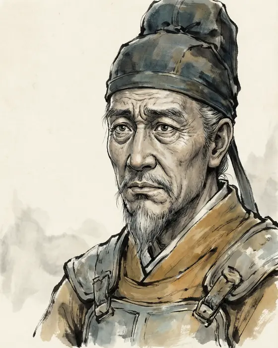
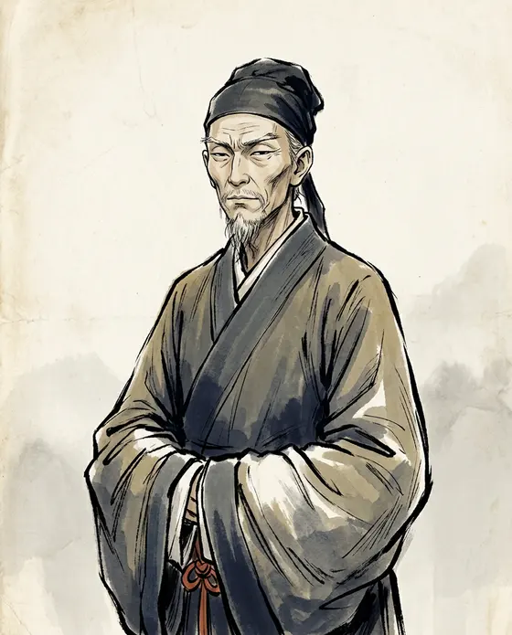
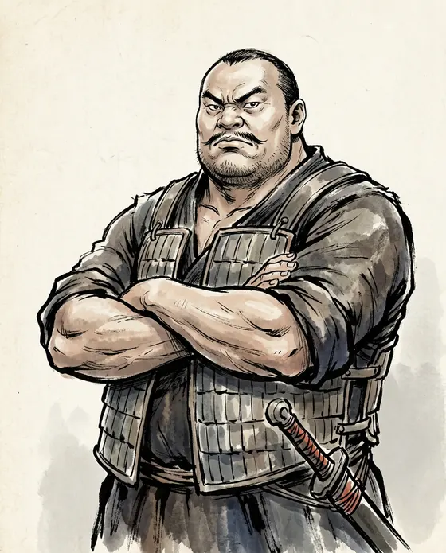
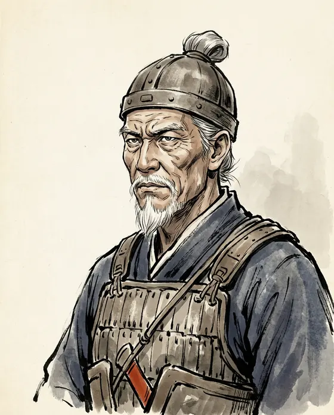
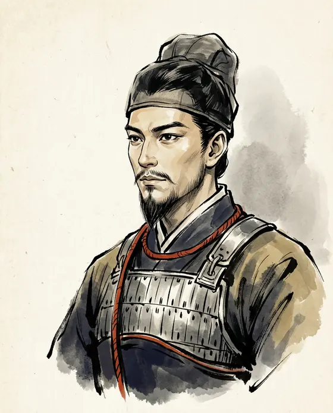
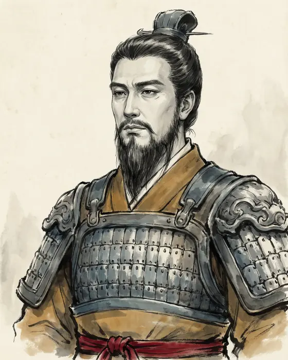
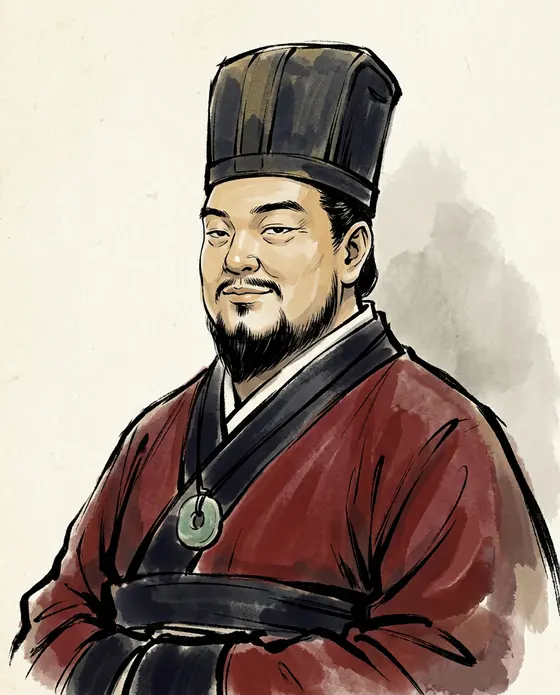

Cao Cao曹操
155–220 CE
Chancellor of Han and master of the north. Poet, administrator, and the man the novel made its villain.
Every person here is a person of the records: what the histories say they did, what they were called afterwards, and where the two part company.













